Clustering
Clustering assigns observations to groups so that points in the same cluster are more similar to each other than to points in other clusters. It is unsupervised learning and appears in exploratory analysis, customer segmentation, anomaly detection, and document organization.
SMILE’s smile.clustering package ships partitional (K-Means family), density-based (DBSCAN, HDBSCAN, DENCLUE, MEC), spectral, hierarchical, and text-oriented (SIB) algorithms. Each algorithm is a static factory that returns a rich result object with labels, optional centroids, and usually predict.
Prefer clustering when you need structure without labeled targets. Choose K-Means / K-Modes when k is known and clusters are roughly convex; X-Means / G-Means when k is unknown but roughly spherical; DBSCAN / HDBSCAN for arbitrary shapes and noise; hierarchical methods when you want a full dendrogram.
Core Abstractions
Clustering Interface and Options
Clustering defines the shared outlier sentinel and the common Options record used by most partitioning algorithms. Noise / outlier points are labeled Clustering.OUTLIER (Integer.MAX_VALUE).
Hyperparameters are fields of the nested Clustering.Options record. Pass an Options instance to fit, or a java.util.Properties map using the keys below (Options.toProperties() / Options.of(props) round-trip). Convenience constructor new Clustering.Options(k, maxIter) uses tol = 1E-4 and no controller.
Partitioning
Partitioning is the base class for density-based algorithms (DBSCAN, HDBSCAN, MEC, DENCLUE) that do not produce centroids. It stores k() — the number of real clusters (excluding the outlier pseudo-cluster) — and group() labels, where noise carries Clustering.OUTLIER.
CentroidClustering
CentroidClustering<T, U> is the record returned by centroid-based algorithms. T is the centroid type and U is the observation type (usually both double[]; SIB uses different types). It implements Comparable by total distortion so Clustering.run can pick the best restart.
| Method | Returns | Description |
|---|---|---|
k() | int | Number of clusters |
centers() | T[] | Cluster centroids / medoids |
center(i) | T | Centroid of cluster i |
group() | int[] | Per-point cluster labels |
group(i) | int | Label of data point i |
proximity(i) | double | Squared distance of point i to its centroid |
size(i) | int | Number of points in cluster i |
distortions() | double[] | Average squared distance per cluster + overall |
distortion() | double | Overall average squared distance (WCSS / n) |
radius(i) | double | RMS radius of cluster i: sqrt(distortions[i]) |
predict(x) | int | Assign a new point to the nearest centroid |
name() | String | Algorithm name |
toString() | String | Formatted cluster summary table |
K-Means++ seeding is used internally by every centroid algorithm. Helpers CentroidClustering.init and CentroidClustering.seeds are also available for custom initialization.
import smile.clustering.KMeans;
import smile.datasets.GaussianMixture;
import smile.math.MathEx;
MathEx.setSeed(19650218);
var data = GaussianMixture.generate().x();
var model = KMeans.fit(data, 4, 100);
System.out.println(model);
System.out.printf("Distortion: %.4f%n", model.distortion());
System.out.printf("Cluster 0 RMS radius: %.4f%n", model.radius(0));
int label = model.predict(data[0]);
System.out.println("First point label = " + label);import smile.clustering.KMeans
import smile.datasets.GaussianMixture
import smile.math.MathEx
MathEx.setSeed(19650218)
val data = GaussianMixture.generate.x
val model = KMeans.fit(data, 4, 100)
println(model)
println(f"Distortion: ${model.distortion}%.4f")
println(f"Cluster 0 RMS radius: ${model.radius(0)}%.4f")
println("First point label = " + model.predict(data(0)))import smile.clustering.KMeans
import smile.datasets.GaussianMixture
import smile.math.MathEx
MathEx.setSeed(19650218)
val data = GaussianMixture.generate().x()
val model = KMeans.fit(data, 4, 100)
println(model)
println("Distortion: %.4f".format(model.distortion()))
println("Cluster 0 RMS radius: %.4f".format(model.radius(0)))
println("First point label = ${model.predict(data[0])}")K-Means
Lloyd’s algorithm with K-Means++ initialization and BBD-tree acceleration (Kanungo et al.). The BBD-tree speeds assignment from O(nkd) toward O(n log k · d). Missing-value data is supported via KMeans.lloyd.
Default choice for numerical vectors when k is known — fast and memory-efficient even for large n.
The examples in this section (and in CLARANS, X-Means, G-Means, Deterministic Annealing, DENCLUE, MEC, and Hierarchical Clustering below) use rem.txt: 1,800 points from six 2-D Gaussian distributions — a clean mixture where centroid-based methods work well.
import smile.clustering.BBDTree;
import smile.clustering.Clustering;
import smile.clustering.KMeans;
import smile.io.Read;
import smile.math.MathEx;
import org.apache.commons.csv.CSVFormat;
MathEx.setSeed(19650218);
double[][] data = Read.csv("data/clustering/rem.txt",
CSVFormat.DEFAULT.withDelimiter(' ')).toArray();
var model = Clustering.run(20, () -> KMeans.fit(data, 6, 100));
System.out.println(model);
var bbd = new BBDTree(data);
var opts = new Clustering.Options(6, 100, 1E-4, null);
var again = KMeans.fit(bbd, data, opts);
System.out.printf("BBD distortion: %.4f%n", again.distortion());
System.out.printf("Best of 20: %.4f%n", model.distortion());import smile.clustering.{BBDTree, Clustering, KMeans}
import smile.math.MathEx
import smile.read
MathEx.setSeed(19650218)
val data = read.csv("data/clustering/rem.txt",
header = false, delimiter = " ").toArray
val model = Clustering.run(20, () => KMeans.fit(data, 6, 100))
println(model)
val bbd = new BBDTree(data)
val opts = new Clustering.Options(6, 100, 1E-4, null)
val again = KMeans.fit(bbd, data, opts)
println(f"BBD distortion: ${again.distortion}%.4f")
println(f"Best of 20: ${model.distortion}%.4f")import smile.clustering.BBDTree
import smile.clustering.Clustering
import smile.clustering.KMeans
import smile.io.Read
import smile.math.MathEx
import org.apache.commons.csv.CSVFormat
MathEx.setSeed(19650218)
val data = Read.csv("data/clustering/rem.txt",
CSVFormat.DEFAULT.withDelimiter(' ')).toArray()
val model = Clustering.run(20) { KMeans.fit(data, 6, 100) }
println(model)
val bbd = BBDTree(data)
val opts = Clustering.Options(6, 100, 1E-4, null)
val again = KMeans.fit(bbd, data, opts)
println("BBD distortion: %.4f".format(again.distortion()))
println("Best of 20: %.4f".format(model.distortion()))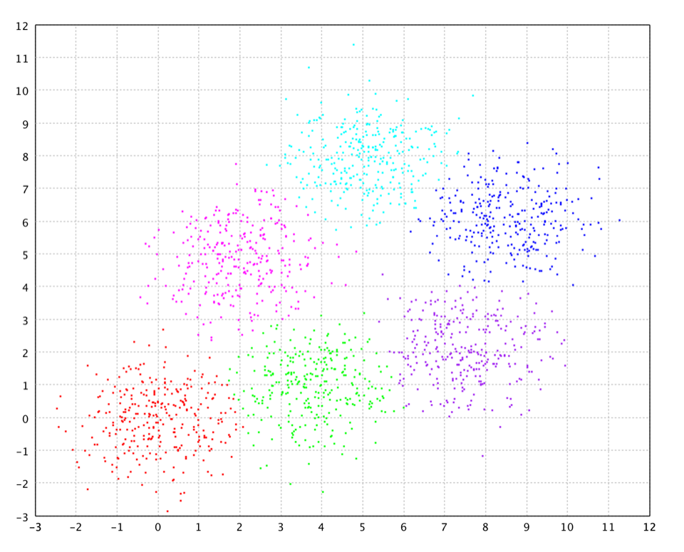
Centroid methods struggle when clusters are long and thin rather than roughly spherical. The elongate.txt data (300 points) are two parallel diagonal strips. K-Means minimizes within-cluster sum of squares with Euclidean Voronoi cells, so points at the far ends of a strip are often closer to the other strip’s centroid than to their own. With k = 2 it typically cuts both strips crosswise instead of recovering the two longitudinal clusters — prefer density-based or spectral methods for shapes like this.
import smile.clustering.Clustering;
import smile.clustering.KMeans;
import smile.io.Read;
import smile.math.MathEx;
import org.apache.commons.csv.CSVFormat;
MathEx.setSeed(19650218);
double[][] data = Read.csv("data/clustering/elongate.txt",
CSVFormat.DEFAULT.withDelimiter('\t')).toArray();
var model = Clustering.run(20, () -> KMeans.fit(data, 2, 100));
System.out.println(model);
System.out.printf("Distortion: %.4f%n", model.distortion());import smile.clustering.{Clustering, KMeans}
import smile.math.MathEx
import smile.read
MathEx.setSeed(19650218)
val data = read.csv("data/clustering/elongate.txt",
header = false, delimiter = "\t").toArray
val model = Clustering.run(20, () => KMeans.fit(data, 2, 100))
println(model)
println(f"Distortion: ${model.distortion}%.4f")import smile.clustering.Clustering
import smile.clustering.KMeans
import smile.io.Read
import smile.math.MathEx
import org.apache.commons.csv.CSVFormat
MathEx.setSeed(19650218)
val data = Read.csv("data/clustering/elongate.txt",
CSVFormat.DEFAULT.withDelimiter('\t')).toArray()
val model = Clustering.run(20) { KMeans.fit(data, 2, 100) }
println(model)
println("Distortion: %.4f".format(model.distortion()))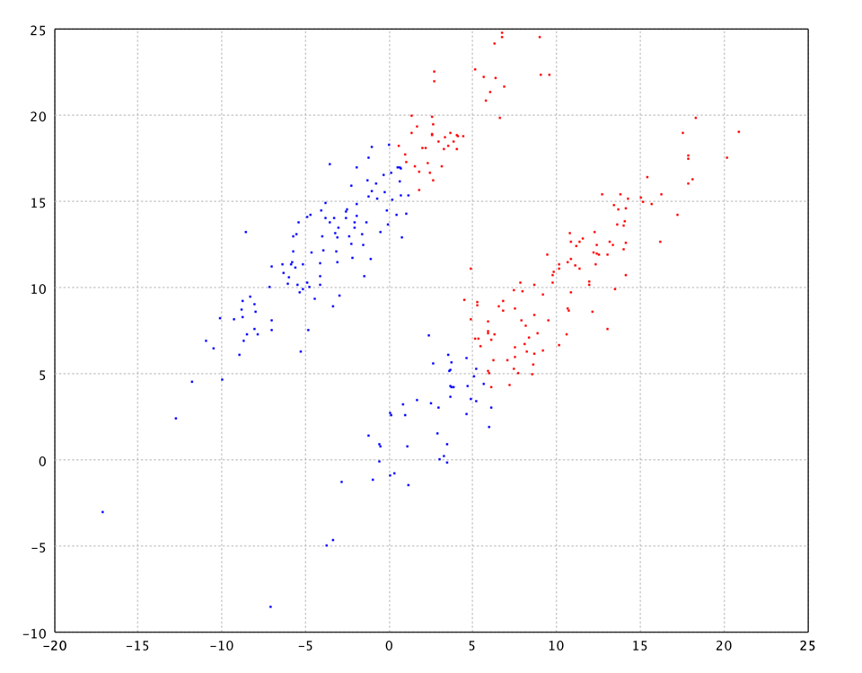
K-Medoids (CLARANS)
CLARANS (Clustering Large Applications based on RANdomized Search). Unlike K-Means, medoids are always actual data points. Use when centers must be real observations, when you need a custom Distance<T> on arbitrary objects, or when outliers would distort Euclidean centroids.
import smile.clustering.Clustering;
import smile.clustering.KMedoids;
import smile.io.Read;
import smile.math.MathEx;
import smile.math.distance.EuclideanDistance;
import org.apache.commons.csv.CSVFormat;
MathEx.setSeed(19650218);
double[][] data = Read.csv("data/clustering/rem.txt",
CSVFormat.DEFAULT.withDelimiter(' ')).toArray();
var model = Clustering.run(20,
() -> KMedoids.fit(data, new EuclideanDistance(), 6));
System.out.println(model);
System.out.printf("Distortion = %.4f%n", model.distortion());import smile.clustering.{Clustering, KMedoids}
import smile.math.MathEx
import smile.math.distance.EuclideanDistance
import smile.read
MathEx.setSeed(19650218)
val data = read.csv("data/clustering/rem.txt",
header = false, delimiter = " ").toArray
val model = Clustering.run(20,
() => KMedoids.fit(data, new EuclideanDistance, 6))
println(model)
println(f"Distortion = ${model.distortion}%.4f")import smile.clustering.Clustering
import smile.clustering.KMedoids
import smile.io.Read
import smile.math.MathEx
import smile.math.distance.EuclideanDistance
import org.apache.commons.csv.CSVFormat
MathEx.setSeed(19650218)
val data = Read.csv("data/clustering/rem.txt",
CSVFormat.DEFAULT.withDelimiter(' ')).toArray()
val model = Clustering.run(20) {
KMedoids.fit(data, EuclideanDistance(), 6)
}
println(model)
println("Distortion = %.4f".format(model.distortion()))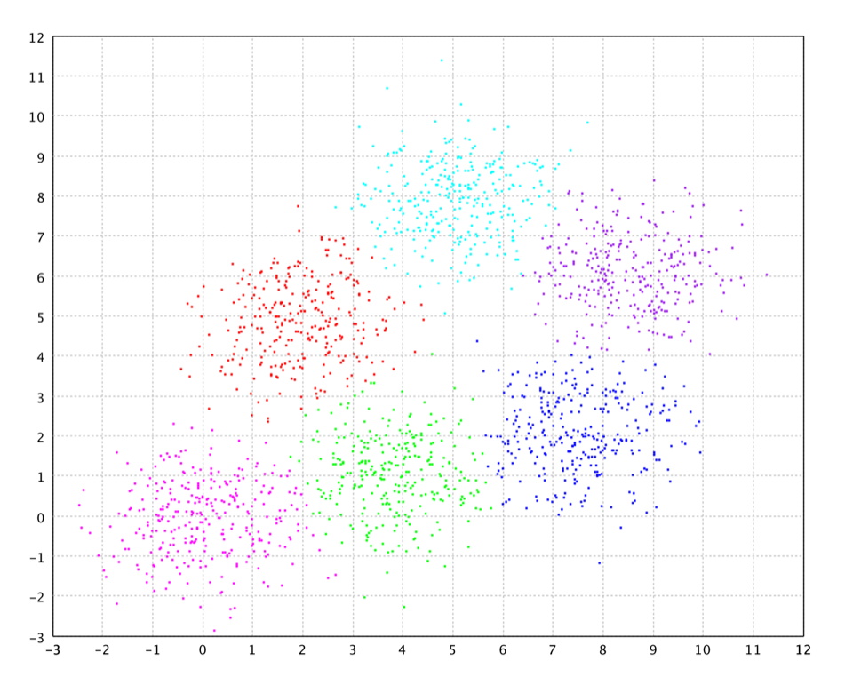
K-Modes
Categorical analogue of K-Means. Centroids are per-column modes (most frequent category), and distances are Hamming distances on integer-coded categorical features. Use for purely categorical or mixed-integer data where Euclidean distance is meaningless.
import smile.clustering.KModes;
import smile.datasets.WeatherNominal;
import smile.math.MathEx;
MathEx.setSeed(19650218);
var weather = new WeatherNominal();
double[][] level = weather.level();
int[][] data = new int[level.length][level[0].length];
for (int i = 0; i < level.length; i++) {
for (int j = 0; j < level[i].length; j++) {
data[i][j] = (int) level[i][j];
}
}
var model = KModes.fit(data, 2, 10);
System.out.println(model);
System.out.println("Mode of cluster 0: " +
java.util.Arrays.toString(model.center(0)));
System.out.println("Predict: " + model.predict(data[0]));import smile.clustering._
import smile.datasets.WeatherNominal
import smile.math.MathEx
MathEx.setSeed(19650218)
val weather = new WeatherNominal
val level = weather.level
val data = level.map(_.map(_.toInt))
val model = kmodes(data, 2, maxIter = 10)
println(model)
println("Mode of cluster 0: " + model.center(0).mkString("[", ", ", "]"))
println("Predict: " + model.predict(data(0)))import smile.clustering.kmodes
import smile.datasets.WeatherNominal
import smile.math.MathEx
MathEx.setSeed(19650218)
val weather = WeatherNominal()
val level = weather.level()
val data = Array(level.size) { i ->
IntArray(level[i].size) { j -> level[i][j].toInt() }
}
val model = kmodes(data, 2, maxIter = 10)
println(model)
println("Mode of cluster 0: ${model.center(0).contentToString()}")
println("Predict: ${model.predict(data[0])}")Minimal synthetic example — Gender (0/1), Color (0–2), Size (0–2):
import smile.clustering.KModes;
int[][] data = {
{0, 0, 0}, {0, 0, 1}, {1, 2, 2}, {1, 2, 1}
};
var model = KModes.fit(data, 2, 50);
int[] mode0 = model.center(0);
int label = model.predict(new int[]{0, 0, 0});import smile.clustering._
val data = Array(
Array(0, 0, 0), Array(0, 0, 1), Array(1, 2, 2), Array(1, 2, 1))
val model = kmodes(data, 2, maxIter = 50)
val mode0 = model.center(0)
val label = model.predict(Array(0, 0, 0))import smile.clustering.kmodes
val data = arrayOf(
intArrayOf(0, 0, 0), intArrayOf(0, 0, 1),
intArrayOf(1, 2, 2), intArrayOf(1, 2, 1)
)
val model = kmodes(data, 2, maxIter = 50)
val mode0 = model.center(0)
val label = model.predict(intArrayOf(0, 0, 0))X-Means
Extends K-Means by automatically determining the number of clusters. Starting from one cluster, it tries to split each centroid; a split is accepted only if the BIC of the two-child model improves under a Gaussian spherical assumption. After each splitting round, centroids are refined with BBD-tree-accelerated Lloyd updates.
Use when k is unknown and the data are reasonably Gaussian-like. The BIC criterion favors spherical, balanced clusters.
import smile.clustering.XMeans;
import smile.io.Read;
import smile.math.MathEx;
import org.apache.commons.csv.CSVFormat;
MathEx.setSeed(19650218);
double[][] data = Read.csv("data/clustering/rem.txt",
CSVFormat.DEFAULT.withDelimiter(' ')).toArray();
var model = XMeans.fit(data, 50, 100);
System.out.printf("Discovered %d clusters, distortion = %.4f%n",
model.k(), model.distortion());import smile.clustering.XMeans
import smile.math.MathEx
import smile.read
MathEx.setSeed(19650218)
val data = read.csv("data/clustering/rem.txt",
header = false, delimiter = " ").toArray
val model = XMeans.fit(data, 50, 100)
println(f"Discovered ${model.k} clusters, distortion = ${model.distortion}%.4f")import smile.clustering.XMeans
import smile.io.Read
import smile.math.MathEx
import org.apache.commons.csv.CSVFormat
MathEx.setSeed(19650218)
val data = Read.csv("data/clustering/rem.txt",
CSVFormat.DEFAULT.withDelimiter(' ')).toArray()
val model = XMeans.fit(data, 50, 100)
println("Discovered %d clusters, distortion = %.4f"
.format(model.k(), model.distortion()))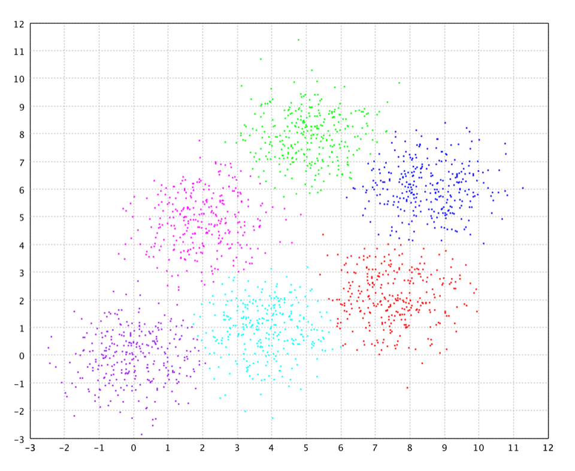
G-Means
Like X-Means, but uses the Anderson-Darling test instead of BIC to decide whether to split. Cluster members are projected onto the candidate split direction; if the 1-D projection is rejected as Gaussian, the split is accepted.
Prefer G-Means when you suspect non-Gaussian within-cluster distributions — it is more sensitive to multi-modality than X-Means.
import smile.clustering.GMeans;
import smile.io.Read;
import smile.math.MathEx;
import org.apache.commons.csv.CSVFormat;
MathEx.setSeed(19650218);
double[][] data = Read.csv("data/clustering/rem.txt",
CSVFormat.DEFAULT.withDelimiter(' ')).toArray();
var model = GMeans.fit(data, 50, 100);
System.out.printf("G-Means found %d clusters%n", model.k());import smile.clustering.GMeans
import smile.math.MathEx
import smile.read
MathEx.setSeed(19650218)
val data = read.csv("data/clustering/rem.txt",
header = false, delimiter = " ").toArray
val model = GMeans.fit(data, 50, 100)
println(s"G-Means found ${model.k} clusters")import smile.clustering.GMeans
import smile.io.Read
import smile.math.MathEx
import org.apache.commons.csv.CSVFormat
MathEx.setSeed(19650218)
val data = Read.csv("data/clustering/rem.txt",
CSVFormat.DEFAULT.withDelimiter(' ')).toArray()
val model = GMeans.fit(data, 50, 100)
println("G-Means found ${model.k()} clusters")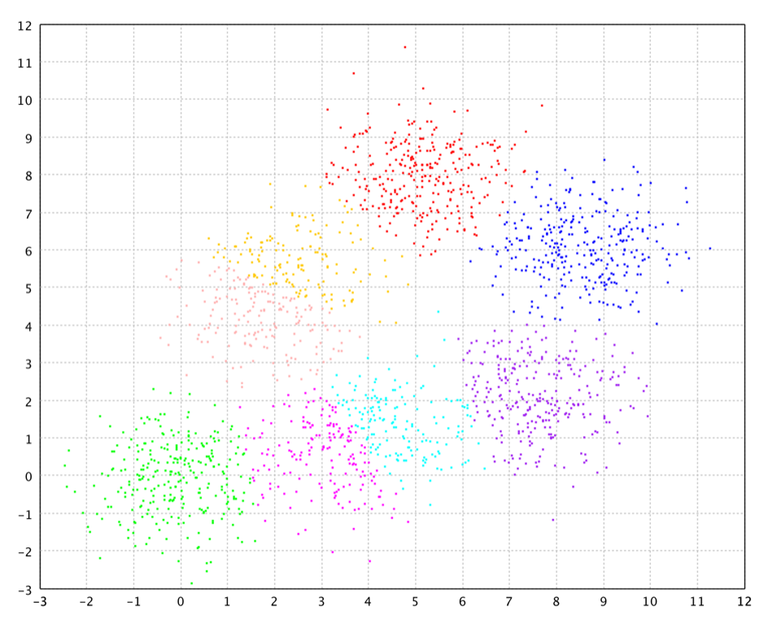
Deterministic Annealing
A soft-EM approach that avoids local optima by annealing temperature. At high temperature all centroids converge to the global mean; as temperature decreases, pairs of centroids split when separation exceeds a threshold, growing the model up to kmax. A final hard-assignment pass produces the CentroidClustering result.
Hyperparameters are fields of the nested DeterministicAnnealing.Options record. Pass an Options instance to fit, or a java.util.Properties map using the keys below (Options.toProperties() / Options.of(props) round-trip).
import smile.clustering.DeterministicAnnealing;
import smile.io.Read;
import smile.math.MathEx;
import org.apache.commons.csv.CSVFormat;
MathEx.setSeed(19650218);
double[][] data = Read.csv("data/clustering/rem.txt",
CSVFormat.DEFAULT.withDelimiter(' ')).toArray();
var model = DeterministicAnnealing.fit(data, 12, 0.9, 100);
System.out.printf("Converged to %d clusters, distortion = %.4f%n",
model.k(), model.distortion());import smile.clustering.DeterministicAnnealing
import smile.math.MathEx
import smile.read
MathEx.setSeed(19650218)
val data = read.csv("data/clustering/rem.txt",
header = false, delimiter = " ").toArray
val model = DeterministicAnnealing.fit(data, 12, 0.9, 100)
println(f"Converged to ${model.k} clusters, distortion = ${model.distortion}%.4f")import smile.clustering.DeterministicAnnealing
import smile.io.Read
import smile.math.MathEx
import org.apache.commons.csv.CSVFormat
MathEx.setSeed(19650218)
val data = Read.csv("data/clustering/rem.txt",
CSVFormat.DEFAULT.withDelimiter(' ')).toArray()
val model = DeterministicAnnealing.fit(data, 12, 0.9, 100)
println("Converged to %d clusters, distortion = %.4f"
.format(model.k(), model.distortion()))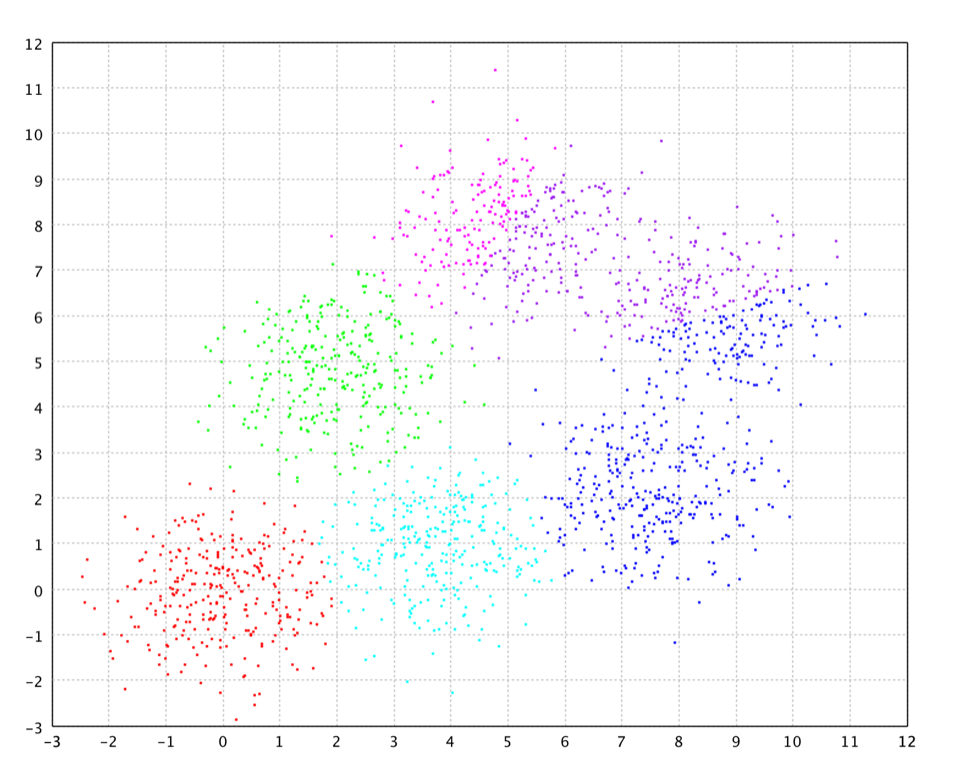
DBSCAN
Density-Based Spatial Clustering of Applications with Noise. A point is a core point if at least minPts neighbors lie within radius ε. Dense regions reachable from a core point form a cluster; unreachable points are labeled Clustering.OUTLIER.
Discovers arbitrary shapes, does not require k, and labels noise natively. Uses a KD-tree for double[] (O(n log n)); a LinearSearch for arbitrary types. Works poorly in high dimensions.
The example below uses the Chameleon t4.8k dataset (8,000 noisy 2-D points with irregular cluster shapes) — a standard benchmark for density-based clustering.
import java.util.Arrays;
import smile.clustering.Clustering;
import smile.clustering.DBSCAN;
import smile.io.Read;
import org.apache.commons.csv.CSVFormat;
double[][] data = Read.csv("data/clustering/chameleon/t4.8k.txt",
CSVFormat.DEFAULT.withDelimiter(' ')).toArray();
DBSCAN<double[]> model = DBSCAN.fit(data, 20, 10);
System.out.printf("Found %d clusters%n", model.k());
long noise = Arrays.stream(model.group())
.filter(l -> l == Clustering.OUTLIER).count();
System.out.printf("Noise points: %d%n", noise);
int label = model.predict(data[0]);
if (label == Clustering.OUTLIER) System.out.println("Noise");
else System.out.println("Cluster " + label);import smile.clustering.{Clustering, DBSCAN}
import smile.read
val data = read.csv("data/clustering/chameleon/t4.8k.txt",
header = false, delimiter = " ").toArray
val model = DBSCAN.fit(data, 20, 10)
println(s"Found ${model.k} clusters")
val noise = model.group.count(_ == Clustering.OUTLIER)
println(s"Noise points: $noise")
val label = model.predict(data(0))
println(if (label == Clustering.OUTLIER) "Noise" else s"Cluster $label")import smile.clustering.Clustering
import smile.clustering.DBSCAN
import smile.io.Read
import org.apache.commons.csv.CSVFormat
val data = Read.csv("data/clustering/chameleon/t4.8k.txt",
CSVFormat.DEFAULT.withDelimiter(' ')).toArray()
val model = DBSCAN.fit(data, 20, 10)
println("Found ${model.k()} clusters")
val noise = model.group().count { it == Clustering.OUTLIER }
println("Noise points: $noise")
val label = model.predict(data[0])
println(if (label == Clustering.OUTLIER) "Noise" else "Cluster $label")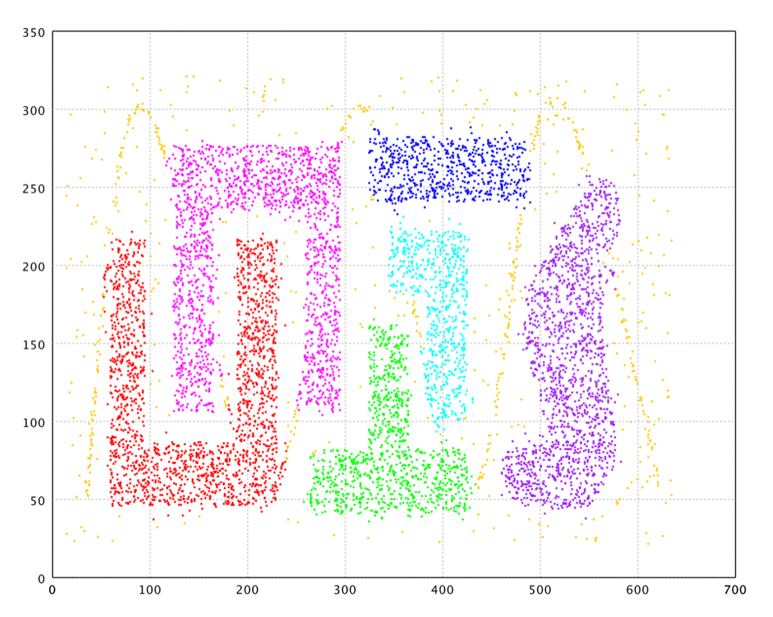
HDBSCAN
Hierarchical DBSCAN builds a full density hierarchy (mutual-reachability MST → condensed tree) and selects stable flat clusters via a stability criterion. Unlike DBSCAN, it handles clusters of varying density without a global ε.
Pipeline: core distances from minPoints nearest neighbors → mutual-reachability graph → MST → condensed hierarchy pruned by minClusterSize.
Note: the current implementation computes full pairwise distances (O(n²) memory and time). For very large datasets consider sub-sampling.
Hyperparameters are fields of the nested HDBSCAN.Options record. Pass an Options instance to fit, or a java.util.Properties map using the keys below (Options.toProperties() / Options.of(props) round-trip). Convenience form: HDBSCAN.fit(data, minPoints, minClusterSize). Also accepts a custom Distance<T>.
import smile.clustering.Clustering;
import smile.clustering.HDBSCAN;
import smile.io.Read;
import org.apache.commons.csv.CSVFormat;
double[][] data = Read.csv("data/clustering/chameleon/t4.8k.txt",
CSVFormat.DEFAULT.withDelimiter(' ')).toArray();
HDBSCAN<double[]> model = HDBSCAN.fit(data, 20, 40);
System.out.printf("Found %d clusters%n", model.k());
double[] stability = model.stability();
for (int i = 0; i < model.k(); i++) {
System.out.printf("Cluster %d stability: %.4f%n", i, stability[i]);
}
long noise = java.util.Arrays.stream(model.group())
.filter(l -> l == Clustering.OUTLIER).count();
System.out.println("Outliers: " + noise);import smile.clustering.{Clustering, HDBSCAN}
import smile.read
val data = read.csv("data/clustering/chameleon/t4.8k.txt",
header = false, delimiter = " ").toArray
val model = HDBSCAN.fit(data, 20, 40)
println(s"Found ${model.k} clusters")
model.stability.zipWithIndex.foreach { case (s, i) =>
println(f"Cluster $i stability: $s%.4f")
}
println("Outliers: " + model.group.count(_ == Clustering.OUTLIER))import smile.clustering.Clustering
import smile.clustering.HDBSCAN
import smile.io.Read
import org.apache.commons.csv.CSVFormat
val data = Read.csv("data/clustering/chameleon/t4.8k.txt",
CSVFormat.DEFAULT.withDelimiter(' ')).toArray()
val model = HDBSCAN.fit(data, 20, 40)
println("Found ${model.k()} clusters")
model.stability().forEachIndexed { i, s ->
println("Cluster $i stability: %.4f".format(s))
}
val outliers = model.group().count { it == Clustering.OUTLIER }
println("Outliers: $outliers")DENCLUE
DENsity CLUstering selects m representative sample points via K-Means (“particles”), then hill-climbs the Gaussian kernel density estimate from each training point to its local density maximum (“attractor”). DBSCAN is run on the attractors for the final assignment.
Best for smooth, continuous data with density peaks — not for high dimensions, sparse data, or uniform distributions.
Hyperparameters are fields of the nested DENCLUE.Options record. Pass an Options instance to fit, or a java.util.Properties map using the keys below (Options.toProperties() / Options.of(props) round-trip). Quick form: DENCLUE.fit(data, sigma, m). predict(x) may return Clustering.OUTLIER.
import smile.clustering.DENCLUE;
import smile.io.Read;
import smile.math.MathEx;
import org.apache.commons.csv.CSVFormat;
MathEx.setSeed(19650218);
double[][] data = Read.csv("data/clustering/rem.txt",
CSVFormat.DEFAULT.withDelimiter(' ')).toArray();
DENCLUE model = DENCLUE.fit(data, 1.0, 50);
System.out.printf("DENCLUE found %d clusters%n", model.k());
System.out.println("Predict first: " + model.predict(data[0]));import smile.clustering.DENCLUE
import smile.math.MathEx
import smile.read
MathEx.setSeed(19650218)
val data = read.csv("data/clustering/rem.txt",
header = false, delimiter = " ").toArray
val model = DENCLUE.fit(data, 1.0, 50)
println(s"DENCLUE found ${model.k} clusters")
println("Predict first: " + model.predict(data(0)))import smile.clustering.DENCLUE
import smile.io.Read
import smile.math.MathEx
import org.apache.commons.csv.CSVFormat
MathEx.setSeed(19650218)
val data = Read.csv("data/clustering/rem.txt",
CSVFormat.DEFAULT.withDelimiter(' ')).toArray()
val model = DENCLUE.fit(data, 1.0, 50)
println("DENCLUE found ${model.k()} clusters")
println("Predict first: ${model.predict(data[0])}")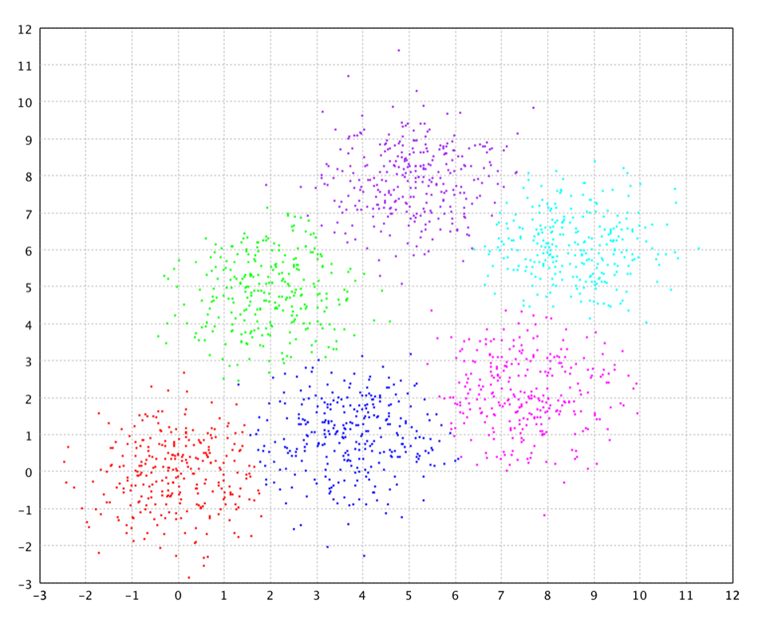
MEC
Non-parametric Minimum Conditional Entropy Clustering minimizes H(C | x) by iteratively relabeling each point to reduce entropy in its neighborhood (Parzen density estimate). Unlike DBSCAN/DENCLUE, MEC needs a good initialization — the public MEC.fit(data, distance, k, radius) API initializes from K-Means (Euclidean double[][]) or K-Medoids (arbitrary distance).
Effective when the true cluster count is uncertain: start with a generous k; MEC may merge clusters toward lower entropy. MEC implements Comparable by entropy for use with Clustering.run.
Hyperparameters are fields of the nested MEC.Options record. Pass an Options instance to fit, or a java.util.Properties map using the keys below (Options.toProperties() / Options.of(props) round-trip). Primary API: MEC.fit(data, distance, k, radius). Full control uses MEC.fit(data, nns, group, options) with a precomputed initial partition.
import smile.clustering.Clustering;
import smile.clustering.MEC;
import smile.io.Read;
import smile.math.MathEx;
import smile.math.distance.EuclideanDistance;
import org.apache.commons.csv.CSVFormat;
MathEx.setSeed(19650218);
double[][] data = Read.csv("data/clustering/rem.txt",
CSVFormat.DEFAULT.withDelimiter(' ')).toArray();
MEC<double[]> model = MEC.fit(data, new EuclideanDistance(), 20, 2.0);
System.out.printf("MEC entropy: %.4f, clusters: %d%n",
model.entropy(), model.k());
MEC<double[]> best = Clustering.run(5,
() -> MEC.fit(data, new EuclideanDistance(), 20, 2.0));
System.out.printf("Best entropy: %.4f%n", best.entropy());import smile.clustering.{Clustering, MEC}
import smile.math.MathEx
import smile.math.distance.EuclideanDistance
import smile.read
MathEx.setSeed(19650218)
val data = read.csv("data/clustering/rem.txt",
header = false, delimiter = " ").toArray
val model = MEC.fit(data, new EuclideanDistance, 20, 2.0)
println(f"MEC entropy: ${model.entropy}%.4f, clusters: ${model.k}")
val best = Clustering.run(5, () => MEC.fit(data, new EuclideanDistance, 20, 2.0))
println(f"Best entropy: ${best.entropy}%.4f")import smile.clustering.Clustering
import smile.clustering.MEC
import smile.io.Read
import smile.math.MathEx
import smile.math.distance.EuclideanDistance
import org.apache.commons.csv.CSVFormat
MathEx.setSeed(19650218)
val data = Read.csv("data/clustering/rem.txt",
CSVFormat.DEFAULT.withDelimiter(' ')).toArray()
val model = MEC.fit(data, EuclideanDistance(), 20, 2.0)
println("MEC entropy: %.4f, clusters: %d".format(model.entropy(), model.k()))
val best = Clustering.run(5) {
MEC.fit(data, EuclideanDistance(), 20, 2.0)
}
println("Best entropy: %.4f".format(best.entropy()))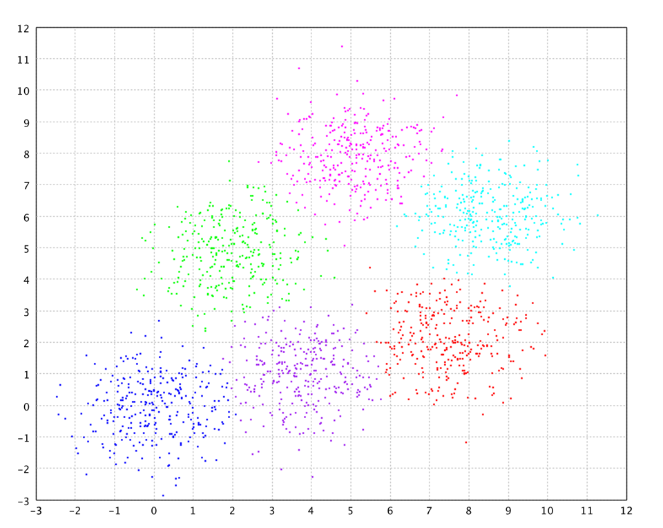
SIB
Sequential Information Bottleneck clusters document vectors (sparse term histograms) by minimizing Jensen-Shannon divergence between cluster centroids and member distributions. Each iteration reassigns every document to the cluster that most reduces JS divergence.
Use for text clustering (bag-of-words or TF-IDF). Input is SparseArray[] normalized so each row sums to 1. The result is CentroidClustering<double[], SparseArray> (dense centroid coordinates, sparse observations).
import smile.clustering.SIB;
import smile.util.SparseArray;
// Build normalized term-frequency vectors (each SparseArray sums to 1)
SparseArray[] docs = /* ... */;
var model = SIB.fit(docs, 5, 100);
System.out.printf("SIB JS distortion: %.4f%n", model.distortion());
int label = model.predict(docs[0]);import smile.clustering._
import smile.util.SparseArray
// Build normalized term-frequency vectors (each SparseArray sums to 1)
val docs: Array[SparseArray] = ???
val model = sib(docs, 5, maxIter = 100)
println(f"SIB JS distortion: ${model.distortion}%.4f")
val label = model.predict(docs(0))import smile.clustering.sib
import smile.util.SparseArray
// Build normalized term-frequency vectors (each SparseArray sums to 1)
val docs: Array<SparseArray> = TODO()
val model = sib(docs, 5, maxIter = 100)
println("SIB JS distortion: %.4f".format(model.distortion()))
val label = model.predict(docs[0])Spectral Clustering
Builds an RBF similarity matrix, computes the normalized graph Laplacian, embeds data in the top-k eigenvectors, then runs K-Means in that embedding. Captures non-convex clusters and manifold structure.
For large n, set Nyström sample count l > 0 to approximate eigenvectors without the full n×n matrix (cost O(nl) instead of O(n²)). Sparse text path: SpectralClustering.fit(SparseIntArray[], p, Clustering.Options) builds a TF-IDF-weighted Laplacian for term-count arrays.
Hyperparameters are fields of the nested SpectralClustering.Options record. Pass an Options instance to fit, or a java.util.Properties map using the keys below (Options.toProperties() / Options.of(props) round-trip). Fit with SpectralClustering.fit(data, options). Convenience constructor new Options(k, sigma, maxIter) sets l = 0.
The example uses sincos.txt (300 points): two interlocking crescent “moons.” They are not linearly separable and are poorly suited to spherical centroids — K-Means tends to cut each arc in half. With a suitable RBF width, spectral clustering embeds the graph connectivity so the two manifolds separate cleanly.
import smile.clustering.SpectralClustering;
import smile.io.Read;
import smile.math.MathEx;
import org.apache.commons.csv.CSVFormat;
MathEx.setSeed(19650218);
double[][] data = Read.csv("data/clustering/sincos.txt",
CSVFormat.DEFAULT.withDelimiter('\t')).toArray();
var opts = new SpectralClustering.Options(2, 0.2, 100);
var model = SpectralClustering.fit(data, opts);
System.out.printf("Spectral clustering: %d clusters, distortion = %.4f%n",
model.k(), model.distortion());import smile.clustering.SpectralClustering
import smile.math.MathEx
import smile.read
MathEx.setSeed(19650218)
val data = read.csv("data/clustering/sincos.txt",
header = false, delimiter = "\t").toArray
val opts = new SpectralClustering.Options(2, 0.2, 100)
val model = SpectralClustering.fit(data, opts)
println(f"Spectral clustering: ${model.k} clusters, distortion = ${model.distortion}%.4f")import smile.clustering.SpectralClustering
import smile.io.Read
import smile.math.MathEx
import org.apache.commons.csv.CSVFormat
MathEx.setSeed(19650218)
val data = Read.csv("data/clustering/sincos.txt",
CSVFormat.DEFAULT.withDelimiter('\t')).toArray()
val opts = SpectralClustering.Options(2, 0.2, 100)
val model = SpectralClustering.fit(data, opts)
println("Spectral clustering: %d clusters, distortion = %.4f"
.format(model.k(), model.distortion()))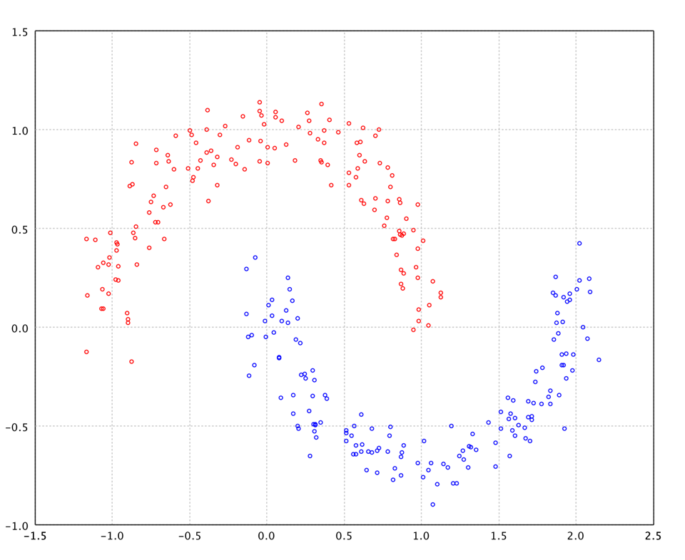
Hierarchical Clustering
Agglomerative bottom-up clustering: each observation starts alone; pairs merge greedily by the chosen linkage until one cluster remains. The full dendrogram can be cut by cluster count or merge height.
Use when you want to explore hierarchy without committing to a fixed k, on small-to-medium data (O(n²) / O(n² log n)), or when the dendrogram itself is insightful. Linkage stores distances as float and supports at most 65 535 observations.
Linkage Methods
All linkage classes live in smile.clustering.linkage and implement Linkage. Build from a data matrix (WardLinkage.of(data)) or a pre-computed proximity matrix.
| Class | Update | Notes |
|---|---|---|
SingleLinkage | min(d(a,x), d(b,x)) | Chaining effect; sensitive to outliers |
CompleteLinkage | max(d(a,x), d(b,x)) | Compact, balanced clusters |
UPGMALinkage | size-weighted average | UPGMA; good general-purpose choice |
WPGMALinkage | unweighted average | WPGMA; ignores cluster sizes |
UPGMCLinkage | centroid of centroids (squared) | Stored as squared distance; height sqrt’d at output |
WPGMCLinkage | midpoint (squared) | Stored as squared distance; height sqrt’d at output |
WardLinkage | minimizes within-cluster variance | Best cluster quality; similar to K-Means |
import smile.clustering.HierarchicalClustering;
import smile.clustering.linkage.CompleteLinkage;
import smile.io.Read;
import org.apache.commons.csv.CSVFormat;
double[][] data = Read.csv("data/clustering/rem.txt",
CSVFormat.DEFAULT.withDelimiter(' ')).toArray();
var model = HierarchicalClustering.fit(CompleteLinkage.of(data));
int[] labels = model.partition(6);
System.out.println("Cut into 6: first labels = "
+ java.util.Arrays.toString(
java.util.Arrays.copyOf(labels, 5)));
double[] heights = model.height();
System.out.printf("Last merge height: %.4f%n",
heights[heights.length - 1]);import smile.clustering.HierarchicalClustering
import smile.clustering.linkage.CompleteLinkage
import smile.read
val data = read.csv("data/clustering/rem.txt",
header = false, delimiter = " ").toArray
val model = HierarchicalClustering.fit(CompleteLinkage.of(data))
val labels = model.partition(6)
println("Cut into 6: first labels = " + labels.take(5).mkString("[", ", ", "]"))
val heights = model.height
println(f"Last merge height: ${heights.last}%.4f")import smile.clustering.hclust
import smile.io.Read
import org.apache.commons.csv.CSVFormat
val data = Read.csv("data/clustering/rem.txt",
CSVFormat.DEFAULT.withDelimiter(' ')).toArray()
val model = hclust(data, "complete")
val labels = model.partition(6)
println("Cut into 6: first labels = ${labels.take(5).contentToString()}")
val heights = model.height()
println("Last merge height: %.4f".format(heights.last()))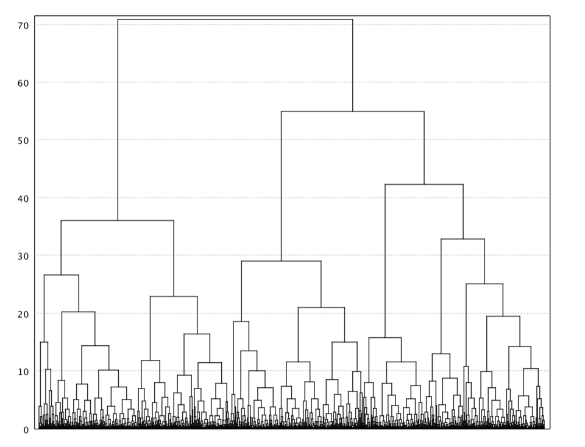
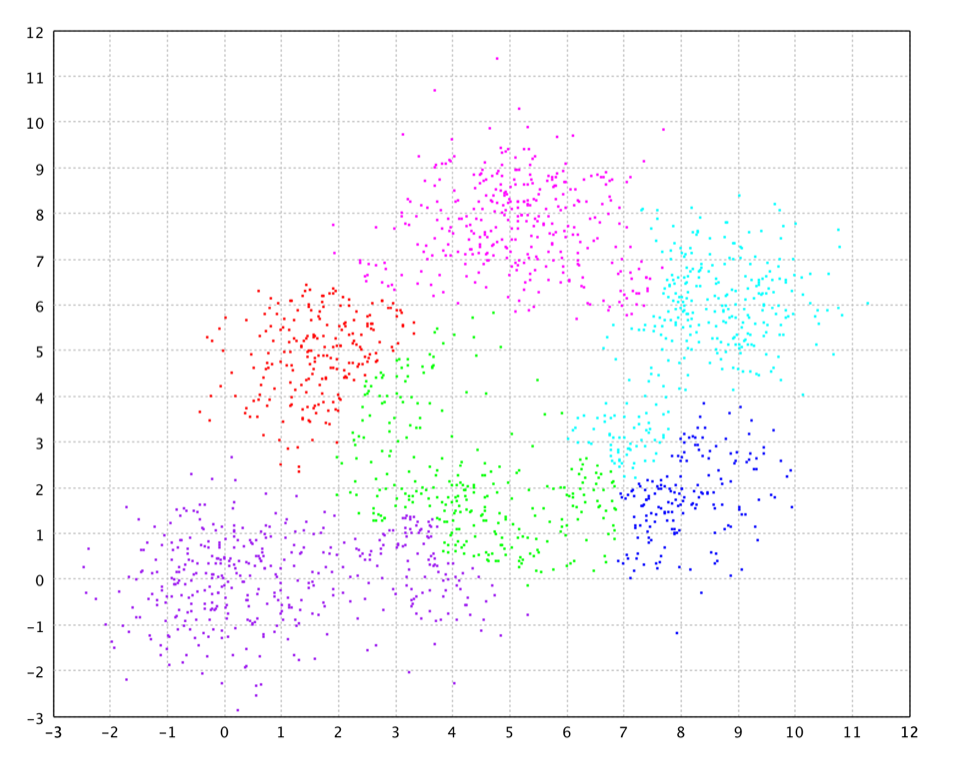
Single linkage shines on connectivity-defined shapes. On sincos.txt (the same interlocking moons as in Spectral Clustering), chaining along nearest neighbors recovers each crescent; a large gap in the dendrogram marks the cut into two clusters. Centroid methods typically fail here.
import smile.clustering.HierarchicalClustering;
import smile.clustering.linkage.SingleLinkage;
import smile.io.Read;
import org.apache.commons.csv.CSVFormat;
double[][] data = Read.csv("data/clustering/sincos.txt",
CSVFormat.DEFAULT.withDelimiter('\t')).toArray();
var model = HierarchicalClustering.fit(SingleLinkage.of(data));
int[] labels = model.partition(2);
System.out.println("Cut into 2: first labels = "
+ java.util.Arrays.toString(
java.util.Arrays.copyOf(labels, 5)));
double[] heights = model.height();
System.out.printf("Last merge height: %.4f%n",
heights[heights.length - 1]);import smile.clustering.HierarchicalClustering
import smile.clustering.linkage.SingleLinkage
import smile.read
val data = read.csv("data/clustering/sincos.txt",
header = false, delimiter = "\t").toArray
val model = HierarchicalClustering.fit(SingleLinkage.of(data))
val labels = model.partition(2)
println("Cut into 2: first labels = " + labels.take(5).mkString("[", ", ", "]"))
val heights = model.height
println(f"Last merge height: ${heights.last}%.4f")import smile.clustering.hclust
import smile.io.Read
import org.apache.commons.csv.CSVFormat
val data = Read.csv("data/clustering/sincos.txt",
CSVFormat.DEFAULT.withDelimiter('\t')).toArray()
val model = hclust(data, "single")
val labels = model.partition(2)
println("Cut into 2: first labels = ${labels.take(5).contentToString()}")
val heights = model.height()
println("Last merge height: %.4f".format(heights.last()))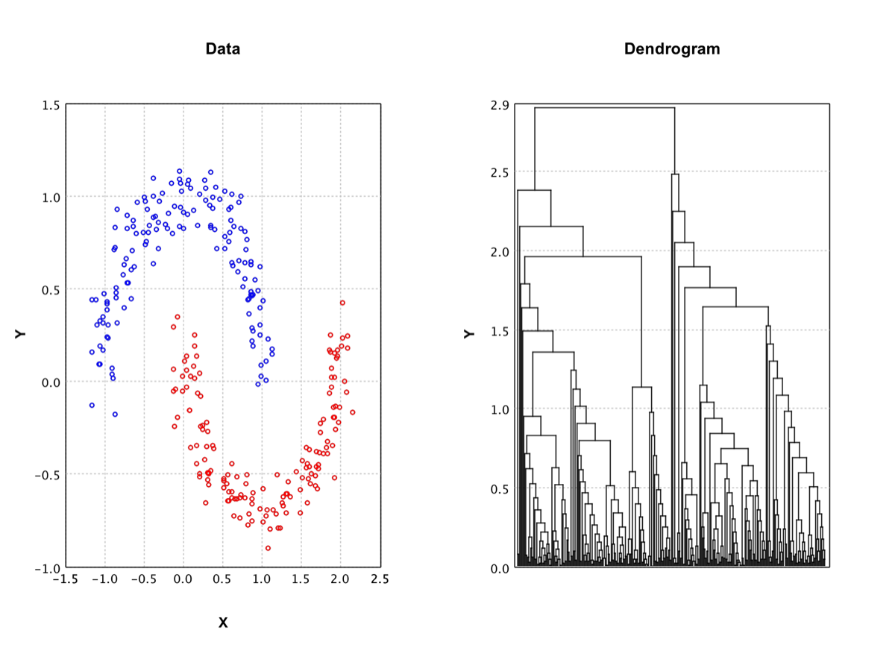
Linkage Selection
| Goal | Recommended linkage |
|---|---|
| Compact spherical clusters | WardLinkage |
| Long chains or arbitrary shape | SingleLinkage |
| Balanced clusters, moderate sensitivity | CompleteLinkage |
| Robust average (bioinformatics) | UPGMALinkage |
Running Multiple Trials
Algorithms with random initialization (K-Means, K-Medoids, K-Modes, MEC, …) may converge to different local optima. Clustering.run(n, supplier) repeats the fit n times and returns the best result by compareTo (distortion for CentroidClustering, entropy for MEC). Throws if runs ≤ 0.
import smile.clustering.Clustering;
import smile.clustering.KMeans;
import smile.datasets.GaussianMixture;
import smile.math.MathEx;
MathEx.setSeed(19650218);
double[][] data = GaussianMixture.generate().x();
var best = Clustering.run(10, () -> KMeans.fit(data, 4, 100));
System.out.printf("Best distortion: %.4f%n", best.distortion());import smile.clustering.{Clustering, KMeans}
import smile.datasets.GaussianMixture
import smile.math.MathEx
MathEx.setSeed(19650218)
val data = GaussianMixture.generate.x
val best = Clustering.run(10, () => KMeans.fit(data, 4, 100))
println(f"Best distortion: ${best.distortion}%.4f")import smile.clustering.Clustering
import smile.clustering.KMeans
import smile.datasets.GaussianMixture
import smile.math.MathEx
MathEx.setSeed(19650218)
val data = GaussianMixture.generate().x()
val best = Clustering.run(10) { KMeans.fit(data, 4, 100) }
println("Best distortion: %.4f".format(best.distortion()))Algorithm Comparison
| Algorithm | k required | Outliers | Arbitrary shape | Distance | Data type | Scalability |
|---|---|---|---|---|---|---|
| K-Means | Yes | No | No (convex) | Euclidean | double[] | O(nkd·iter) fast |
| K-Medoids | Yes | Partial | No (convex) | Any | Any | O(n²k) |
| K-Modes | Yes | No | No (convex) | Hamming | int[] categorical | O(nkd·iter) |
| X-Means | Upper bound | No | No (spherical) | Euclidean | double[] | O(nkd·iter) |
| G-Means | Upper bound | No | No | Euclidean | double[] | O(nkd·iter) |
| Det. Annealing | Upper bound | No | No | Euclidean | double[] | Slow (multi-temperature) |
| DBSCAN | No | Yes | Yes | Any | Any (KD-tree for double[]) | O(n log n) w/ index |
| HDBSCAN | No | Yes | Yes | Any | Any | O(n²) current impl. |
| DENCLUE | No | Yes | Yes (density) | Euclidean | double[] | O(nm·iter) |
| MEC | Initial k | Yes | Yes (density) | Any | Any | O(n·radius·iter) |
| SIB | Yes | No | No | Jensen-Shannon | SparseArray text | O(nkd·iter) |
| Spectral | Yes | No | Yes (manifold) | RBF kernel | double[] | O(n²) or O(nl) w/ Nyström |
| Hierarchical | Post-hoc | Partial | Yes | Any | Any (float prox.) | O(n² log n), ≤ 65 535 pts |
Common Patterns
Choosing k
Unknown k: X-Means or G-Means for Gaussian-like data; DBSCAN or HDBSCAN for density-based / irregular clusters; MEC when you have an initial partition.
Elbow: run K-Means for k = 2…K, plot model.distortion() vs. k, pick the elbow.
Silhouette: compare k values with smile.validation.metric.Silhouette.
Handling Outliers
DBSCAN, HDBSCAN, DENCLUE, and MEC label noise with Clustering.OUTLIER. Centroid methods are sensitive to outliers — consider removing noise with DBSCAN before K-Means.
Reproducibility
Randomized algorithms respect SMILE’s global RNG. Call MathEx.setSeed(…) before every fit for repeatable results.
import smile.math.MathEx;
MathEx.setSeed(42);import smile.math.MathEx
MathEx.setSeed(42)import smile.math.MathEx
MathEx.setSeed(42)Serialization
Most models implement java.io.Serializable. Persist with smile.io.Write.object / smile.io.Read.object. Dedicated Options records also round-trip through java.util.Properties.
import smile.io.*;
import smile.clustering.CentroidClustering;
import java.nio.file.Path;
Path file = Write.object(model);
@SuppressWarnings("unchecked")
var loaded = (CentroidClustering<double[], double[]>) Read.object(file);